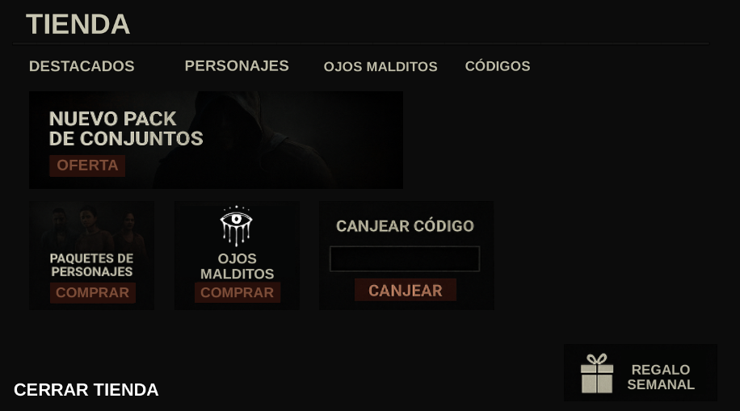
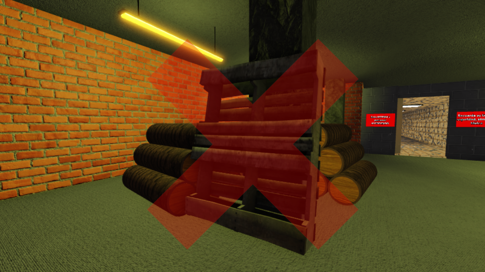
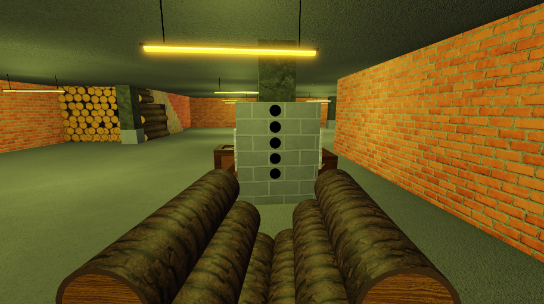

Parche del Desarrollador | Julio 2025
Última modificación: 20 de Octubre del 2025Escrito y Modificado por @Adeveloper_games (Administrador)
CAMBIOS IMPORANTES
El juego ha reanudado su desarrollo tras un mes de inactividad y varios planes de reforma...
Estos planes de reforma han permitido al equipo desarrollador remasterizar la interfaz principal transformandolo en zonas individuales y como no, independientes de los jugadores. Por ejemplo, cuando el jugador estaba listo para empezar partida, no podía ver el Mercado Sangriento. Ahora sí podrá ya que se ha implementado toda la antigua interfaz en un Lobby como espacio social.
Comentario Anónimo de un Desarrollador: "Por mi punto de vista, ha ganado un gran aspecto positivo en calidad y esperemos una posible retención de jugadores."

ZONAS INDIVIDUALES
En la imagen que hemos adjuntado, podeis apreciar cual será el futúro aspecto de la tienda con sus apartado nuevos y remasterizados permitiendo al jugador una mejor organización. De hecho si os fijais en la parte inferior derecha hemos agregado un sistema de un regalo semanal aleatorio.
Comentario del Administrador: "Sinceramente, todavía tengo dudas en si he hecho bien agregando el Regalo Semanal..."
EL NUEVO LOBBY
Este será el nuevo espacio social para todos los jugadores sin importar si desean ser asesinos y supervivientes en la partida. Os pongo un ejemplo, el famoso juego de Roblox en sus tiempos llamado "Flee The Facility", Tiene su lobby, su sistema de votación de mapa y una elección de asesino aleatoria. A diferencia de Dead By NightLight, tiene una selección de mapa completamente aleatoria pero manipulable por los jugadores (no pay to win), y una selección de Asesino autonoma, democrática y libre. Con posibilidad y opción de que los jugadores intercambien su propio rol.
Aviso del Administrador: "Cabe recalcar que el Lobby no lo he hecho ni yo ni ningún Desarrollador. Ha sido importado de un viejo conocido mío. Gracias Firelyy_Dev por la aportación en Dead By NightLight."

EL NUEVO SISTEMA DE ATURDIMIENTO
En la imagen que habreís podido ver arriba de este texto, es una imagen del antiguo sistema de "aturdir" al asesino o bloquearle el paso momentaneamente por ese pasillo. Bien, me congrata anunciaros el nuevo sistema de "aturdimiento".
Este sistema, a diferencia del pallet, tendrá dos botones en cada lateral. Dificilmente se puede ver en la imagen y, me disculpo por ello. El superviviente, cuando se encuentre en el angulo (lado) correcto, si lo decimos desde el medio del Bloqueador (como se ve en la imagen que está abajo de este texto), el superviviente se tendría que encontrar o en la parte derecha del bloqueador o la izquierda para poder presionar el botón.
Una vez, lo presionase, de esos agujeros saldrian una especie de tablones de madera que bloquearian el paso para el asesino pero no para el superviviente ya él, podría continuar cruzando mediante una interacción si se agachase. Para eliminar los tablones, es de la misma manera de como lo era el pallet. El Asesino, interactua con los tablones, ejecuta una animación y los rompe. Dejando el bloqueador inutilizable permanentemente (durante esta partida).
Comentario Anónimo de un Desarrollador: "Yo, no tuve oportunidad de ver como es que funcionaba el antiguo sistema pero si sabía todo sobre ello. Me congrata ver como se renueva todo sobre la marcha."
REWORK A UNA DE LAS HABILIDADES DEL LEÑADOR

El logo de la habilidad se cambiará. Ya que, con el nuevo efecto que tendrá, ni el logo ni el nombre de la habilidad concordará de la mejor manera. La habilidad pasará a llamarse "Maldición: Hechizo Invertido"
El efecto de dicha habilidad con la Rareza en Fucsia (Rareza III) es el siguiente: Cuando la partida comience, esta habilidad se activará. Convirtiendo una planta mugrosa en planta mugrosa maldita. Si algún superviviente, limpia dicha planta mugrosa maldita, todos los supervivientes, obtendrán el efecto negativo de la Exposición. Dicho efecto, hace que vuelva considerablemente vulnerables a los supervivientes, dejandolos en estado Herido. El efecto de la Exposición durará 60 segundos activo.
Las demás rarezas con dicha Habilidad serían de la siguiente manera: Con la habilidad en la Rareza en Azul (Rareza I), el efecto de Exposición tendrá una duración de 15 segundos. Con la habilidad en la Rareza en Naranja (Rareza II), el efecto tendrá una duración de 30 segundos. Y con la rareza máxima, la que se ha explicado en la parte de arriba.
Comentario del Administrador: "La imagen/logo de la habilidad que hay en la parte superior, es el antiguo. (No el nuevo)"